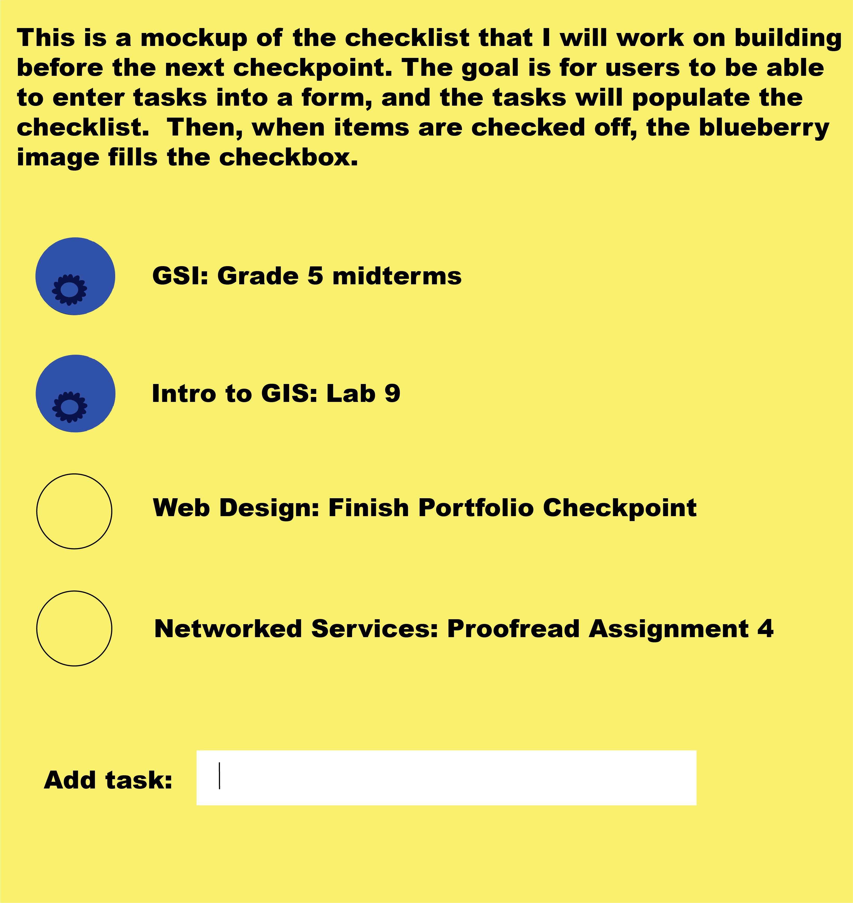

Use this space to create your to-do list.
You can also check off items as you complete them. Remember to add tasks, not goals. Think about accomplishable projects, and be realistic about how much you can finish today. It might be helpful to break your tasks into small pieces that you can feasibly complete in a pomodoro. For instance, if you need to write a 5-page research paper for your American History course, you might write your to-do list items like this: Search library website and Google Scholar for 5 possible sources (25 minutes), Skim first article (25 minutes), Skim second article (25 minutes) … Draft introduction paragraph (25 minutes), etc.
Keep in mind that the Pomodoro method is useful for more than just schoolwork. You can also use this site to help you get to those calls or emails you’ve been putting off, fold the laundry that’s sitting in the dryer, or pick up around the house. You may be surprised how much you can get done in one twenty-five minute Pomodoro – often, something I have been avoiding for days only takes a few minutes to complete. You could also use this checklist to plan activities for your shorter or longer breaks. Planning and writing down relaxation time may help you to remember that rest is just as important as work.